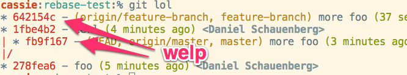

Git - Put the stupid back in stupid content tracker
Git describes itself as a stupid content tracker. While this was surely meant as a clever pun and an understatement, there is some truth to it. When you go to seek out workflows with git and try to understand how people use it, there is a myriad of flows and recommendations. Most of them focus on the areas of git which are often considered to be on a higher level of the usage ladder. Rebasing, squashing, cherry-picking and all those features. And most often they are considered to be part of your everyday workflow. And while I’m in no position to judge whether those techniques are ideal for certain teams and their workflows I think they are most of the time way too complex to work in larger teams and across people with different skill levels. Once you tell people they should squash/rebase on all branches when merging upstream and alias pull to pull –rebase but not when you have merged a feature branch and not pushed it yet so remember this when you write code and concentrate on the next deploy you’re probably gonna have a bad time.
See this is not what you should have to remember to commit the code you just wrote to disk. I’ve seen such recommendations and the following complaints when the workflow breaks down a couple of times now. It even led me to compose this fascinating tweet at one point:
Before complaining about git
please consider answering these 2 questions:
1. Were you trying to be
overly clever?
2. Were you expecting svn?
— Daniel Schauenberg (@mrtazz)
June 4, 2013
The Example
But in all seriousness in the end the most important thing about git is that it lets you commit changes to disk in a way so that your future self can figure out what changed later. And I want to highlight why I think it makes more sense to start simple and then figure out if additional features really make sense for you.
Let’s take an example workflow you can find on the internet and take a look:
git pull –rebase instead of git pull
git rebase -i @{u} before git push
(on “feature”)
git merge master
to make feature compatible with latest master
(on “master”)
git merge –no-ff feature to ship a feature
However if “feature” contains only 1 commit, avoid the merge commit:
(on “master”)
git cherry-pick feature
It doesn’t matter where this is from because I don’t want to disrespect the author or their ability to choose a workflow that works for them. It just is a good example (of which you can find hundreds that are similar on the web) of what a lot of people think a git workflow has to be like and cargo cult it into their setup. After all if you’re not using all features of git you must be missing out on precious productivity right?
Back to the example. Have you kept track and can remember without looking when
to merge, rebase or cherry-pick? You are basically doing the same thing -
bringing new commits to your branch - and you have to do 3 different things
depending on some circumstances. But this isn’t even the most error prone
part. Let’s consider you work on a fairly active project with a lot of people.
You are maybe even doing continuous integration and continuous deployment and
trunk/master gets commited to all the time. You are working on a feature in a
branch (btw while we’re at it read Camille Fourniers' excellent blog
post to find out why you actually shouldn’t do this in a
continuous deployment setup) and want to pull in changes from master. So you
merge master as per the instructions. You notice someone else has pushed to
the feature branch in the meantime. You update the local branch with
pull --rebase as per the instructions again and push up your changes. If you
ever had to do this you won’t be surprised that your working tree now looks
something like this:

You now have the same commit with two different SHA IDs on different branches. This might not look like a big problem right now. But I for one don’t like to have multiple IDs for the same thing and also think that having two commits doing the same thing is not an ideal situation.
But even if you work alone on your feature branch and don’t need to rebase
before pushing you will eventually run into a similar situation on your master
branch. You have worked on your feature branch for a while. You opened a pull
request, incorporated feedback and pushed it back up to the branch. People
have linked to your commits in tickets to note that it fixes stuff they’ve
been waiting on. Now the big moment has come and you want to integrate with
master. You pull in changes from origin, you run git merge --no-ff feature-branch to bring in the changes with a clean merge commit. You run
git push but there have been upstream changes. So you bring them in again as
always with git pull --rebase. Now you can push and everything’s fine right?
Well almost, except that last rebase has rewritten all your commits from your
feature branch (if you additionally ran git rebase -i before pushing you are
probably very well aware of this). You might think that this is ok or even
intended since you wanted to clean up your commits anyways. And that this
makes it much cleaner and easier to read. However what you effectively just
did was rewrite (git) history and remove public references of changes.
Everybody who linked to your commits now has links pointing to a non existing
resource (they will still be there until you eventually clean up the remote
feature branch but this is just details in my opinion). Pull requests don’t
get automatically closed and you sure don’t remember to do it by hand and all
references in there are useless anyways. And all just for a little bit of
beautification of how you actually did your work.
So what are you saying?
Does that mean you should never use rebase? Am I saying that only the basic git commands are supposed to be part of a workflow? Do I call all these developers using advanced techniques stupid?
N-O-P-E
I do use rebase in some occasions, I don’t think it’s the devil’s work. There are legitimate reasons to use it and it sure is helpful sometimes. However when you’re starting to get into git or migrating to it and building a workflow for your team it often makes the most sense to start with the simplest thing that could possibly work. git add, commit, push, pull, merge. All these are safe operations and don’t break anything for others and most likely don’t bring you into weird situations where you’re totally stuck and lost. There might come a time where you bring rebase and its siblings into the mix. But then there should be a reason and it hopefully is because it helps you be more productive and removes confusion in your team. And I sure hope you know how it works and what you’re getting yourself into. Because it can be what you end up with but it shouldn’t be where you start. Keep it stupid simple.